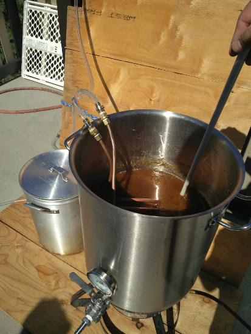

### Grain

### Hops

### Yeast

## Water

- After water has heated up to around 151F add the grains
- Stir them well so they are well immersed in the water
- Set a timer for 60-70 minutes
- Drink beer üçª
- Squeeze the bag well and sparge with some of the wort
- Congratulations, You've made wort!
- Bring the wort to a boil
- Drink beer üçª
- Once you have a rolling boid start a 60 min timer
- Follow the recipe times for adding the hops
- Prepare the yeast
- Drink beer üçª

- After 60 minutes turn the heat off
- Time to chill the wort
- Anything that touches the wort now has to be sanitized
- Drink beer üçª
- Once the temperature is down to around 75F transfer to carboy or bucket
- Pitch the yeast
- Fill the airlock with sanitizer close the fermenter
- Move the fermenter to a dark cool place
- Drink beer üçª